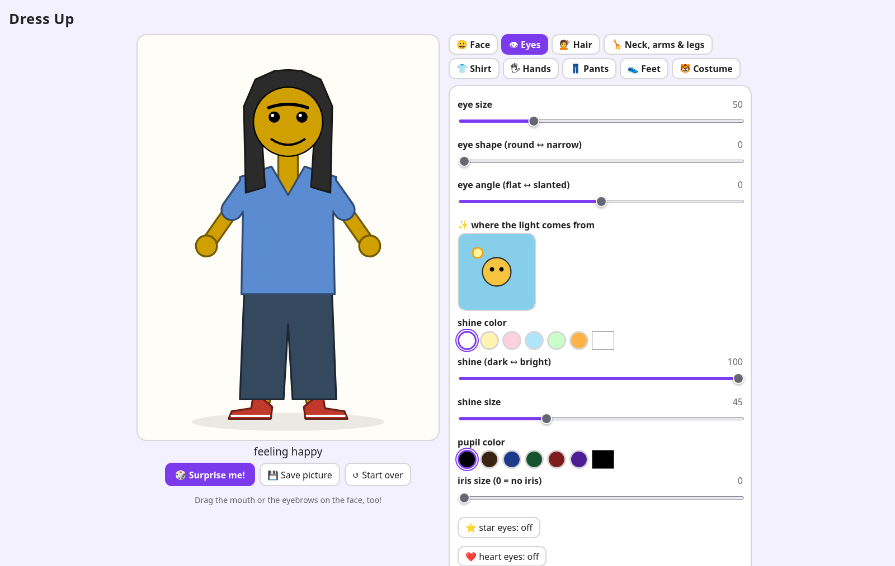
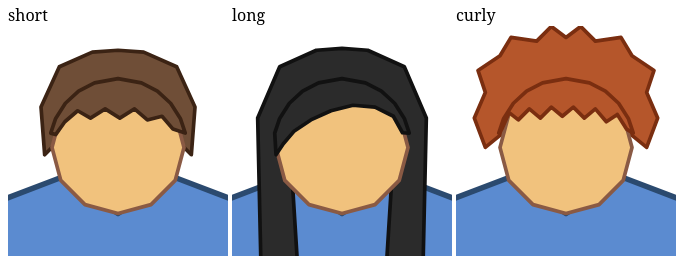
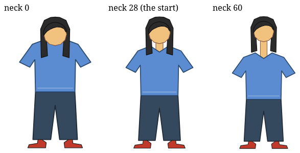
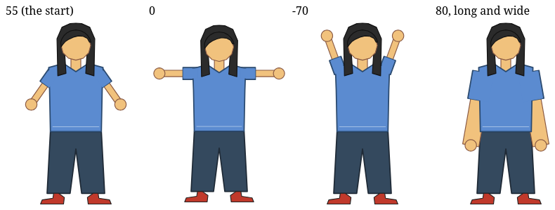
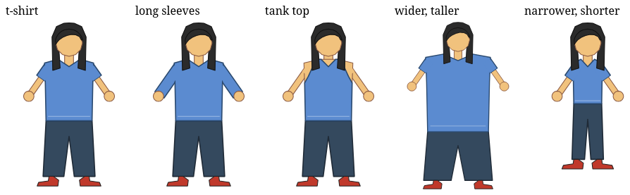
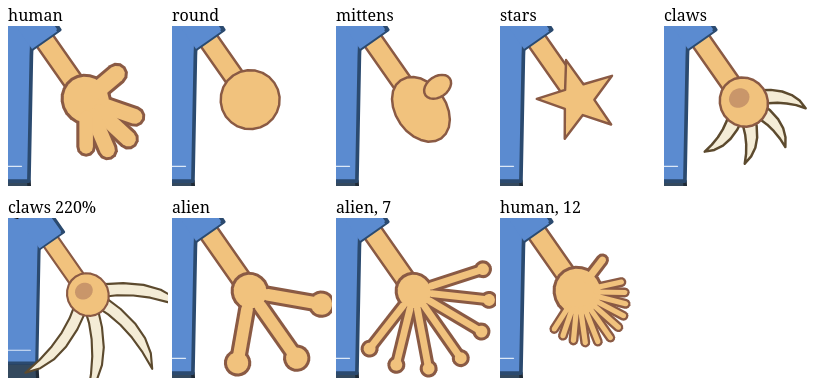
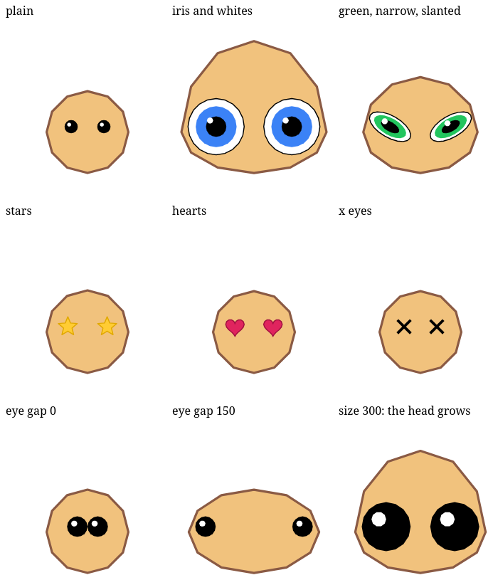
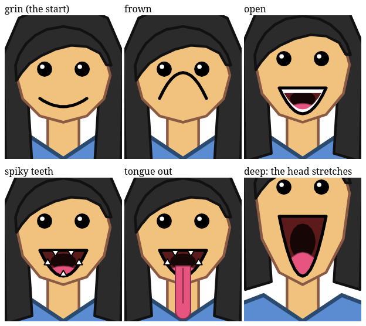
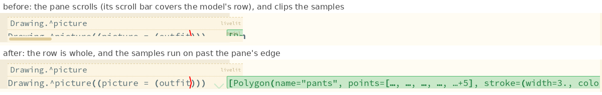
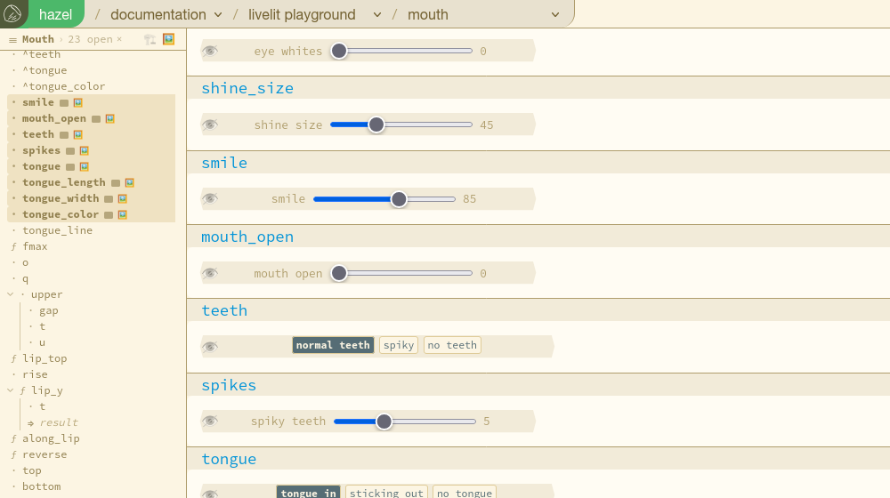

Hazel performance analysis · ^report(2) · 2026-10-11
From a game to a slide deck: Messed Up Dress Up in Hazel
Dedicated to a resonance between research and play — see the dedication at the end.
How a plain HTML/JS prototype, played by real players, became Hazel slides you can use: hair on the head, a neck, arms, a shirt with a style and a size, hands, eyes and a mouth. Branch #2635 (livelits × modular editors), with the slides kept in step on #2597. Measured 2026-10-11 on dev builds, in headless Firefox.
In short: ^report(1) took a livelit slider release from 4.6 s to about 0.13 s. That made the slides worth building out, so we did: each feature was tried first in Messed Up Dress Up, a one-file HTML/JS game, by its players, and then formulated in Hazel, on the Livelit Playground slides. The formulations work and look like the game. They also show the next performance problem plainly: a slide's cost now grows with the number of points it draws, because the picture is computed, and then turned into SVG text, by Hazel code, one point at a time.
The method: prototype in HTML/JS, formulate in Hazel
Messed Up Dress Up is one HTML file: a friend to dress, and tabs of controls for the face, the eyes, the hair, the neck, arms and legs, the shirt, the hands, the pants, swimwear, the feet and costumes. It is quick to change, and it has players, who say what they want next and what is confusing. HTML/JS is still the lighter-weight place to prototype, in a lot of ways.
The Hazel side is the Livelit Playground deck. Its pictures are lists of polygons, each drawn in its own ^polygons editor, with named anchors on their corners, and set into one picture by matching anchors: the shirt's neck to the head's chin, the head's crown to the hair's. A ^picture livelit shows the result, ^sliders and ^choices set the numbers and styles. So each of the game's features, already tried by players, was rewritten in that vocabulary: polygons, anchors, and functions from the controls' values to polygons.

The features, one at a time
Shoes and Hair
Hair on the head, not behind it
The slide drew the hair behind the head, so short hair showed as a cap peeking out around it. Drawing it on top instead ran into the anchors: a hairdo is placed by its crown, and an anchor is a corner of its polygon, so every hairdo's outline ran through the crown, and drawn over the head it would have cut a V from the crown down to the face.
The game draws long hair in two layers, so the slide does that for every hairdo: the hairdo as it was, drawn behind the head (its crown still places it), and a top, the hair over the scalp down to a fringe, drawn on the head. The two are placed together by the crown, then split by name to stack: body, shoes, the hair's back, the head, the hair's top.

A neck, and a frame that fits
The head sat on the shirt's collar. Now a rectangle runs from the shirt's neck anchor to the chin, its length set by a slider. Its anchors sit in the middles of its edges, and it is 16 longer than what shows: placed, it moves 8 down under the collar and the head 8 down over its top, so no gap shows. As in the game, it is drawn first, behind the shirt, so it shows in the V of the collar.
A long neck pushed the head out of the viewer's fixed frame. The viewer now frames what is drawn: the usual frame, grown to every point plus a margin and made the viewer's shape, so a taller picture is drawn smaller rather than cut off.

Arms (new slide)
Arms, and a shirt that is a system of polygons
The game's three arm sliders, with its ranges and starting values: the angle out of the shoulders (0 straight out, 90 down, -90 up), the length and the width. An arm is a band from a point just inside the shoulder to the hand, and the hand a disc. The angle turned out to be the most useful control, as the players had found.
Arms that move need sleeves that move, so the shirt is no longer one polygon. It is a system of them, with the arms' position as a parameter: the torso, drawn in its editor without sleeves, and a sleeve on each arm computed from its angle, length and width. Then three more of the game's shirt controls: the style (t-shirt, long sleeves, tank top; the sleeve covers 38%, 95% or none of the arm), and the width and height, which stretch the torso about the neck. The shoulders and hips are anchors, so the arms and pants follow, and the pants take the shirt's width too.


Hands (new slide)
Six kinds of hands
The game's six hand styles, chosen with buttons, and its sliders for the size, the fingers of a human hand (5 is a hand, 1 a thumbs-up, 100 a fringe) and of an alien hand, and the claws' length. A hand is made in its own frame, the arm along x, then turned to the arm's angle and mirrored on the left. The game draws hands with SVG ellipses, round-capped lines and curves; here they are polygons: ellipses of 20 sides, fingers as bands with round ends, talons as sampled curves. Human and alien hands are drawn as the game draws them, every part first a little bigger in the outline's color and then in skin, so palm and fingers make one shape with one outline.

This is the heaviest slide, and the one that shows what comes next. A change takes about 1 s with round hands and 2.2–2.5 s with twelve human or seven alien fingers. A profile of alien-finger changes: about 1.7 s per change on the main thread, in ^picture's view, which is Hazel code turning every point of the picture into SVG text, and about 1.5 s in the worker, computing the points (profiled times; real ones are smaller). Both grow with the number of points: both hands, in two layers, with pads, come to over a thousand. Two cheap steps helped: fewer points per shape (a pad is a 12-gon, a fingertip arc 5 points), and making the hand once for both arms; together they took seven alien fingers from 4.7 to 2.5 s.
Eyes and Mouth (new slides)
A face, in the game's own units
The game's face comes from the Kids' Choice slide, in its own units: a head 160 high. The new slides work in those units and set the result on the head drawn here, by its crown and chin, so the face moves and grows with the head. They build on Shoes and Hair, not on Hands, so they stay quicker.
Eyes: plain, stars, hearts or x eyes, an iris color, and the game's sliders for size, gap, shape (round to narrow), angle (the outer corners rising), iris, eye whites and shine. A plain eye is a pupil, an iris and whites when chosen, squashed and then slanted, with a shine toward the light in the picture's own frame. The eyes keep the gap between them, edge to edge, however big, narrow or slanted they are; the default gap puts the usual eyes where they always were. The head grows wider and taller to hold them, so they stay 8 inside its outline.

Mouth: a smile from a frown to a grin that opens (a smile like a D, a frown the other way up), normal, spiky or no teeth, and a tongue that is in, sticks out, or is not there, of any length, width and color. Its lips are the game's quadratic curves. The game clips the inside of the mouth to the lips; there is no clipping in a list of polygons, so here the teeth and tongue are regions between the lip curves. A deep mouth stretches the head's lower half, as in the game, and the head rises on its neck.

Making it usable
Playing the slides, rather than reading them, turned up the rough edges between "it works" and "you can use it".
A probe in an eye's pane was cut off
A livelit's eye opens a pane under it with its syntax, and a probe there drew its samples past the end of the line, which in the pane is its right edge: they were clipped, and the pane's scroll bar covered the model's row. The pane's rows are rows the livelit keeps clear in the editor, so the samples now run on past the pane, as they do beside any other line (47afffcf10).

Buttons were cut off
A choice's box was 27 columns, and the six hand styles and seven tongue colors did not fit. Making its width follow the buttons did not work: every choice came out the same width, because a livelit's shape is fixed for the livelit, not computed per use. So it is 36 columns (b580d84aa1).
One cell per control, its settings behind the eye
Each control was two cells: one naming the configured livelit (let ^hand_size_dial = Drawing.^slider("hand size", 2, 80), code, no GUI) and one using it (let hand_size = ^^livelit(^hand_size_dial(14)), with the GUI), named differently, so it was not clear which cell had the GUI. Every slider is used once, so its settings now go in its use, and the eye shows them on demand: the cell shows the slider, and its eye the livelit's head (Drawing.^slider("hand size", 2, 80)) and the model. The choices could not follow yet: a direct use cannot have a type application in its head (Drawing.^choice@<Hand>(cases)(Human) reads as applying the livelit's module to Human), so their two cells stay, renamed to pair up: ^hand_style and hand_style (7bb257be0e).
Two outline modes: 🏗️ dev and 🖼️ UX
With modular editors, the outline picks which parts of a program show as cells. For playing, you want the GUIs; for building, the code. So the outline has two modes, each with its own open cells, neither disturbing the other: 🏗️ dev, the architecture, shows what was picked; 🖼️ UX, the art made in it, shows every livelit's GUI to start. Either can show anything, and a GUI row has a 🖼️ chip saying whether UX mode shows it. On the Mouth slide, UX mode opens its 24 GUIs; the mode and its picks survive a reload (38a6df851e).

What a change costs, slide by slide
| slide | change | until the picture redraws |
|---|---|---|
| Shoes and Hair | a hairdo; the neck | 0.3–0.4 s |
| Arms | an arm slider; the shirt's style or size | 0.5–0.9 s |
| Hands | round hands; a style | 0.9–2.1 s |
| Hands | twelve human or seven alien fingers | 2.2–2.5 s |
| Eyes | a style; a slider | 0.5–1.3 s |
| Mouth | the smile; opening, teeth, tongue | 0.8–1.7 s |
For comparison, a Kids' Choice release is about 0.13 s (^report(1)), and the game itself takes under a millisecond. The difference is in what is drawn: Kids' Choice's face is a hand-written view, while these slides compute their pictures, polygon by polygon and point by point, in Hazel, and then print every point.
What next
- Draw the points without Hazel code per point.
^picture's view spends about 1.7 s of a Hands change printing points. A view that reuses the drawing of unchanged shapes, or a builtin that prints a list of points, would take most of that away. To measure first: how much the view already reuses for shapes that did not change. - Let a direct use have a type application in its head,
Lib.^f@<T>(args)(model), so choices can be one cell with their settings behind the eye, like sliders. - More of the game: the shirt's collar, legs and pants styles, the feet, colors for everything, and in the end one slide with the whole friend.
- Seeing big types: the cursor inspector cuts off a long type with no way to see the rest (#2674, filed on
dev).
Try it
- The Livelit Playground slides on the live build of #2635: Hair, Shoes, Arms, Hands, Eyes, Mouth, Full Body. Switch the outline to 🖼️ to see only the GUIs.
- A slide you opened before keeps your copy of it: the hazel menu's Reset Editor restores the shipped one, for that slide only.
How these were measured
- Headless Firefox over WebDriver, a fresh profile per run, dev builds of #2635 on Matthew's laptop. A change is a slider set or a button pressed; its time runs until the
^picture's SVG changes, polled every 0.2 s, so the times are good to about 0.2 s, one run each. - The Hands profile: the Gecko profiler, four alien-finger changes, the main thread and the eval worker read apart.
- Every slide was checked with the CLI (no static errors; the anchors where expected), and the figures are the pictures' own SVG, saved after each change.
Dedication
We dedicate this report to a resonance: a recurring set of good feelings and thoughts that comes from helping Hazel while being playful and creative with kids.
It involves people, Matthew's kids most of all. Messed Up Dress Up is theirs: they play it, they named it, and much of what is in it, and so in these slides, began as something they asked for. Here the research and the play turned out to be one activity, and it has been, in Matthew's words, a very rewarding experience.
We hope others can find it too, if it is their desire.